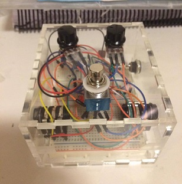

Projetos Pessoais


O Pedal de Guitarra foi um projeto feito no primeiro semestre da faculdade em paralelo ao conhecimento que eu obtia das aulas e um pouco de extra que fui aprendendo sozinha. Montei um pedal de distorção que funciona perfeitamente e pode ser conectado com qualquer instrumento elétrico e amplificadores. (foto 1).
A Portal Gun foi um projetof eito no começo do ensino médio. Usei meus conhecimentos da época de soldagem, design, leds, habilidades manuais e criatividade para recriar, em tamanho real, uma arma de um famoso jogo chamado Portal. Ela brilhava, piscava, e era muito daora!(foto 2)
O Servidor VPN se trata mais de um projeto que estou no processo de fazer. Consiste de usar um raspberry pi, praticamente um mini computador de bolso, para processar uma rede VPN (rede privada) nos arredores da faculdade, rua, casa, etc. Essa VPN protege a internet que você acessa, além de vários outros benefícios que a rede pública prejudica. (foto 3)